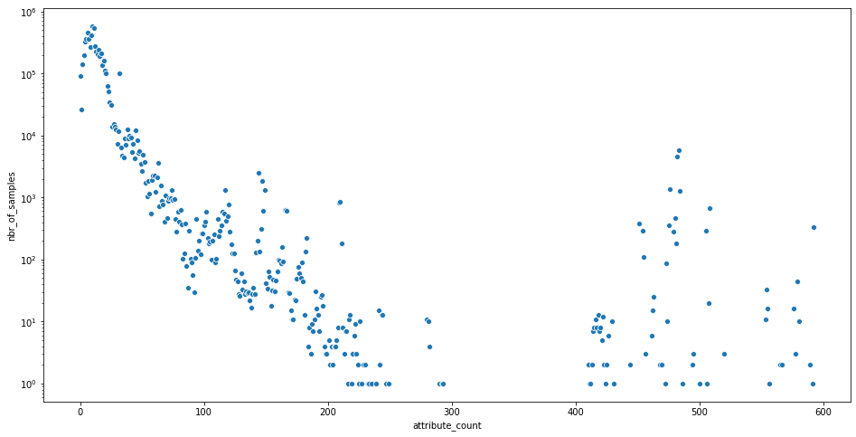

OmicIDX on BigQuery
Availability: This ipython notebook is available at https://github.com/seandavi/omicidx_examples.
OmicIDX is a project to democratize access to omics metadata. As the sizes of omics repositories have grown into the millions of available samples, thinking of the metadata themselves as Big Data seems reasonable. Additionally, by making the metadata more fit-for-use for text mining, natural language processing, ingestion into machine learning or search engines, OmicIDX aims to facilitate augmentation and analysis of these metadata.
In practice, the OmicIDX mines data from the NCBI Sequence Read Archive (SRA) (updated monthly) and NCBI Biosample databases (updated daily).
What is BigQuery?
[BigQuery] is an enterprise data warehouse and database. It is managed by Google, meaning there are no servers to set up, storage to manage, or configuration. Access to data stored in BigQuery can be public, limited to individuals, or to just the owner.
In the case of OmicIDX, the data in BigQuery are publicly accessible. Querying the data still requires an account and billing to be activated, but Google offers free credits to new users that will allow many queries against the OmicIDX data.
Getting started
Before using BigQuery in python, one needs to create an account with Google and activate the BigQuery engine.
See here for the quickstart tutorial. (5 minutes)
After completing the quickstart, navigate to:
On the left panel, you should now see the isb-cgc-01-0006 project. Expanding that item, the omicidx
dataset is available.
At this point, explore the OmicIDX data via the Google Console. BigQuery uses standard SQL for queries.
Python access to BigQuery
- Install google-cloud-bigquery and follow instructions go get started.
Note that while I am using python here, BigQuery client libraries are available for many languages. A command-line client (bq) is also available for shell scripting, etc.
Examples
From here on out, the code can speak for itself. For more details on using BigQuery from python, check out the documentation
from google.cloud import bigquery
import warnings
warnings.filterwarnings('ignore')
client = bigquery.Client()
Studies published by year
sql_query = """
SELECT
DATE(
EXTRACT(YEAR FROM published),
EXTRACT(MONTH FROM published),
1) as month,
count(*) as studies
FROM `isb-cgc-01-0006.omicidx.sra_study`
where published <= CURRENT_TIMESTAMP()
GROUP BY month
ORDER BY month desc;
"""
Here, use a convenience method to convert results to a pandas dataframe.
res = client.query(sql_query).to_dataframe()
res.head()
| month | studies | |
|---|---|---|
| 0 | 2019-08-01 | 319 |
| 1 | 2019-07-01 | 4946 |
| 2 | 2019-06-01 | 2800 |
| 3 | 2019-05-01 | 5595 |
| 4 | 2019-04-01 | 4227 |
The seaborn library is a high-level plotting library based on matplotlib.
import matplotlib.pyplot as plt
plt.figure(figsize=(16, 8))
import seaborn as sns
sns.scatterplot(x = "month", y = "studies", data = res)
<matplotlib.axes._subplots.AxesSubplot at 0x11ee4ba20>
Experiments by type
The sra_experiment table contains most of the details about the experimental
strategies. In particular, the library_strategy column
sql_query = """
SELECT library_strategy, count(*) as count
FROM `isb-cgc-01-0006.omicidx.sra_experiment`
GROUP BY library_strategy
ORDER BY count desc"""
res = client.query(sql_query).to_dataframe()
res.head(15)
| library_strategy | count | |
|---|---|---|
| 0 | WGS | 1964510 |
| 1 | AMPLICON | 1628660 |
| 2 | RNA-Seq | 1470370 |
| 3 | OTHER | 606406 |
| 4 | WXS | 322459 |
| 5 | ChIP-Seq | 142978 |
| 6 | CLONE | 135932 |
| 7 | RAD-Seq | 78845 |
| 8 | Targeted-Capture | 62990 |
| 9 | POOLCLONE | 57912 |
| 10 | Bisulfite-Seq | 52425 |
| 11 | miRNA-Seq | 45051 |
| 12 | ATAC-seq | 37000 |
| 13 | WGA | 36621 |
| 14 | SELEX | 30146 |
Number of “cancer” studies
BigQuery is a capable system even for full text searching. In this case,
the abstract, title, and description fields for a study contain the
largest amount of free text. Searching each separately is a possibility,
but BigQuery has a CONCAT operator that can build up a single long string
for search. Converting that string to all lower-case (using LOWER) facilitates
case-insensitive search for cancer. Note that in SQL, the wildcard character
is %.
sql_query = """
SELECT count(*) as count
FROM `isb-cgc-01-0006.omicidx.sra_study`
WHERE LOWER(CONCAT(abstract, " ", title, " ", description)) like '%cancer%'
"""
res = client.query(sql_query).to_dataframe()
print("There are {0} studies in which `cancer` appears in the title, abstract, or description".format( res['count'][0]))
There are 770 studies in which `cancer` appears in the title, abstract, or description
Distribution of number of attributes per sample
The sra_sample table contains most of the metadata that are associated with
the “phenotype” or “characteristics” of the sample. The sample attributes are
included in a “nested column” in BigQuery. The array length
of that the attributes column then gives the number of distinct attributes
for each sample. While pulling those results, one-per-sample, back into python
is one way to proceed, writing a SQL query that creates the histogram for us
will be more efficient.
sql_query = """
with t as
(SELECT array_length(attributes) as attribute_count
FROM `isb-cgc-01-0006.omicidx.sra_sample`)
SELECT t.attribute_count, count(*) as nbr_of_samples
FROM t
GROUP BY attribute_count
ORDER BY attribute_count asc
"""
res = client.query(sql_query).to_dataframe()
plt.figure(figsize=(16, 8))
g = sns.scatterplot(x="attribute_count", y="nbr_of_samples", data=res)
g.set_yscale('log')
plt.show()

Conclusion
This little post is just to whet the appetite. BigQuery is a new technology for many informatics folks, but it is quite powerful, extensible, and is nearly free for datasets of even modest size. With libraries for R, python, java, as well as a simple command-line client, access to OmicIDX in BigQuery is well-supported.
Other approaches to accessing OmicIDX data are forthcoming.